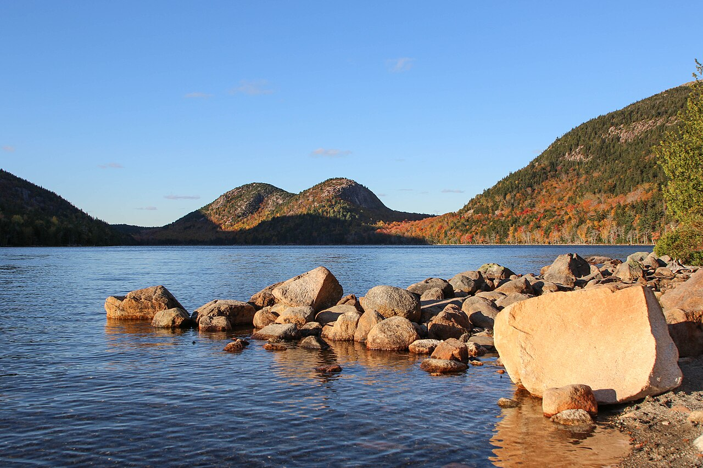

Acadia National Park from Bar Harbor · 5-day family itinerary
Five days based in Bar Harbor, on Mount Desert Island, for an eleven-year-old and an eight-year-old. The park pass and the Cadillac Mountain road reservation are two separate purchases sorted before you fly, the busy east side happens early, and the free Island Explorer bus does the afternoons.

Photo: Victoria Stauffenberg, National Park Service, Jordan Pond, the Bubbles, public domain, via Wikimedia Commons. Photographed in autumn; this plan runs in July.
.jpg){kind=link}
Checked before you commit
This illustrative route flies into Bangor International Airport, which the National Park Service (NPS) puts about one hour from the park, stays in Bar Harbor and flies home from Bangor. NPS pages for Acadia (fees and passes, Cadillac Summit Road vehicle reservations, operating hours, current conditions, Park Loop Road, Island Explorer, the east and west sides, directions, safety, hiking, Jordan Pond, carriage roads, and the Ocean Path, Jordan Pond Path, Bubbles, Ship Harbor and Wonderland trail pages) were read on 16 November 2026. Nothing was booked.
One base and one airport. NPS says Bangor is served by national airlines and has car rentals, and that Hancock County Airport, 10 miles from the park, has direct flights from Boston. East-side stops are 10 to 30 minutes from Hulls Cove Visitor Center and the west side 20 to 45 minutes, depending on traffic. We didn’t measure Bar Harbor to Bangor.
One anchor each morning and a quieter afternoon. The longest walk is the 1.5-mile Bubbles hike, an option for Day 4 only if the granite is dry. NPS says most car parks are full by 9 am in peak season, so the east-side walks start early and the Island Explorer bus covers the afternoons.
We didn’t check flights, the hire car, accommodation, ranger programs, tide times or any tour. The park fees and the US$6 Cadillac reservation are what NPS showed on 16 November 2026, for its 2026 season. NPS hasn’t yet published the 2027 reservation dates. A booking-hub link doesn’t hold a room, a car or a road slot.
Planning boundary: dates are illustrative; the worked example runs Monday 19 to Friday 23 July 2027, five days counted from the flight in to the flight home. In 2026, NPS required Cadillac reservations from 20 May to 25 October, and it says the Island Explorer runs from mid- or late June to mid-October; we assume 2027 is similar, which is why the plan sits in July.
NPS says cell service in Acadia is unreliable and that lifeguards may not be present, even in summer. Alfred doesn’t check park alerts, road reservations, bus timetables, tides or weather. A booking-hub link doesn’t prove a booking.
Route and family-coordination brief
Party: two adults, an eleven-year-old and an eight-year-old, Australian residents. Base: Bar Harbor. Pace: gentle, a morning outing and a quieter afternoon. Assumption: a hire car booked ahead and collected at Bangor, and a connection through a US hub; we didn’t check routes, flights or fares.
Two purchases, not one: NPS requires an entrance pass for every part of the park, all year. A private vehicle pass is US$35, valid seven days, and non-US residents aged 16 and over pay an extra US$100 each unless admitted with an Annual or America the Beautiful pass. For two Australian adults that is US$235 for the week. Driving Cadillac Summit Road also needs a separate US$6 vehicle reservation.
Reservation rule: in 2026, NPS released 30 percent of Cadillac Sunrise and Daytime reservations 90 days ahead and 70 percent two days ahead, both at 10 am Eastern time, on Recreation.gov only; they aren’t sold at the park. By our calculation, 10 am Eastern in July is midnight in Sydney or Melbourne. Reservations are per vehicle, with no re-entry, and vehicles over 21 feet, bike racks included, are turned away.
Car-park rule: NPS says most of the park’s car parks are full by 9 am in peak season, that the Park Loop Road is extremely congested in July and August, and that afternoons at Jordan Pond can be very congested. So the car goes out early, and the fare-free Island Explorer, which stops at Sand Beach, Thunder Hole, Jordan Pond and the Bubbles, takes over later. It doesn’t go up Cadillac Mountain.
Water and phone rule: NPS says to carry at least 1 litre of water each, more on warmer days, wear sturdy shoes, and not rely on your phone for maps; driving and carriage road maps are free at Hulls Cove Visitor Center. It also says the park doesn’t accept cash, so bring a card.
Left out: the Cadillac sunrise slot, which in July had a 4 am to 5:30 am entry window in 2026; ladder and iron-rung trails; swimming in Jordan Pond, which is a drinking-water supply and closed to swimming; cycling the carriage roads; Bar Island’s low-tide crossing; boat tours and ranger programs, which we didn’t check; and camping.
Day 1 — Fly into Bangor, buy the pass, find the bus stops
Fly into Bangor International Airport and collect the hire car you booked. NPS puts the airport about one hour from the park. We haven’t checked flight times, so the day stays open until you land.
Drive to Bar Harbor and buy food and water for the week. If you haven’t bought the entrance pass online, Hulls Cove Visitor Center sells it, card only; display it through the windscreen from tomorrow. Print or save the Cadillac reservation’s QR code tonight, because NPS says connectivity in the park is unreliable.
If you haven’t got a Cadillac reservation for Wednesday, this morning at 10 am Eastern was the two-day release in 2026’s rules; check Recreation.gov before you drive.
Fallback: if the flight lands late, skip the visitor centre and buy the pass online tonight.
Live-check: your flight time; the hire car pick-up; NPS alerts.
Day 2 — Hulls Cove early, then Ocean Path from Sand Beach
Start at Hulls Cove Visitor Center for a free driving map, and ask about becoming a junior ranger, which NPS says you can do there. Then follow the Park Loop Road’s one-way section towards Sand Beach before the car parks fill; NPS says most are full by 9 am in peak season.
Ocean Path from Sand Beach’s upper car park. The 0.7 miles to Thunder Hole are concrete and packed gravel. Beyond it the path turns rocky, climbs two granite staircases past the 110-foot Otter Cliffs and reaches Otter Point. NPS warns of steep drops into the ocean, so keep the children away from the edge; turn back at Thunder Hole if the eight-year-old is tired.
Back at Sand Beach, which has toilets, changing areas and a water bottle filling station. NPS gives the summer ocean temperature as 55 to 60 °F (12.8 to 15.6 °C) and says lifeguards may not be present, so treat it as a paddle unless you’ve checked. Ride the Island Explorer from Sand Beach or Thunder Hole if you parked further away.
Fallback: if Sand Beach is full, NPS says to have a back-up plan or come back later; try again after lunch by bus.
Live-check: NPS alerts; the Island Explorer timetable; high tide, if you want Thunder Hole at its loudest.
Day 3 — Jordan Pond by bus, Cadillac Mountain by reservation
Take the Island Explorer to Jordan Pond. Walk the eastern half of Jordan Pond Path from the boat launch, along the east shore on crushed stone. NPS says the western half is much harder, with boulders and scrambling, and may challenge families with small children, so turn back at the northern end. No wading or swimming; the pond is a public water supply.
Lunch at the Jordan Pond House restaurant, which NPS listed as open from 16 May to 23 October in 2026, or a picnic. Then rest; NPS says afternoons at Jordan Pond are very congested.
Drive up Cadillac Summit Road in the Daytime slot you reserved, arriving inside its 30-minute entry window. It is a three-mile, two-lane road to the 1,530-foot summit, with pull-outs on the way up, two car parks at the top, toilets and paved walks between the overlooks. There is no re-entry, and NPS closes the road to vehicles at 9 pm.
Fallback: if you couldn’t get a reservation, skip the summit. The east side has plenty without it.
Live-check: the reservation’s date and entry time; the QR code saved offline; the summit weather, which NPS says can differ drastically from Bar Harbor’s.
Day 4 — The Bubbles if it is dry, carriage roads if not
Take the Island Explorer to the Bubbles Divide trailhead. The Bubbles hike is 1.5 miles return, 60 to 90 minutes, with steep rocky sections, open granite and stairs; NPS says North Bubble’s ledges are slick in wet weather. Go to South Bubble and Bubble Rock, the glacial boulder, only if the rock is dry and both children are keen. There are no accessible toilets at the trailhead.
A quiet afternoon in Bar Harbor.
Fallback: if the granite is wet, walk a section of the carriage roads instead. NPS says they are about 16 feet wide, broken-stone and free of cars; cyclists yield to everyone, and everyone yields to horses.
Live-check: the forecast; NPS trail closures; the bus timetable back.
Day 5 — The quiet side’s shore, then the flight home
Drive to the west side, 20 to 45 minutes from Hulls Cove. Ship Harbor Trail is a 1.3-mile figure-eight, 30 to 60 minutes, past a narrow cove with interpretive signs; NPS calls it great for families and birders, and its first loop is accessible. There are vault toilets at the trailhead. If the tide is going out, add the 1.4-mile return Wonderland Trail nearby for rock pools, and never turn your back on the water.
Drive to Bangor and return the car. We didn’t measure the drive from the west side, so leave a generous buffer.
Fallback: if the flight leaves early, skip Wonderland, or skip the west side and drive straight from Bar Harbor.
Live-check: your flight time; the car return time; NPS alerts, because Route 102A can close in storms.
Planning notes
Related travel note: The summit road takes a second ticket.
Dates are illustrative. At decision time, recheck NPS alerts, the 2027 Cadillac reservation dates and release rules, the entrance and non-resident fees, the Island Explorer timetable, Hulls Cove Visitor Center’s hours, the tide times for Wonderland, your flights into Bangor, the car-hire pick-up and return, and your accommodation booking.
If you miss the 90-day release. In 2026, 70 percent of reservations were released two days ahead at 10 am Eastern. For a Wednesday drive, that is Monday morning in Maine, midnight on Monday night in eastern Australia. If none is left, NPS says no reservation is needed to reach the summit on foot, by bike or by taxi; this plan doesn’t include those.
What we couldn’t confirm. NPS’s alerts and weather forecast load in a way we couldn’t read, so check them yourself. NPS gives the Island Explorer season differently on different pages, from mid-June or late June to mid-October, with reduced service from 18 August on its current page. We found no NPS summer air temperatures; it gives the summer ocean temperature as 55 to 60 °F (12.8 to 15.6 °C).
Thunder Hole. NPS says this sea cave can produce thundering crashes about two hours before high tide in high winds. On a calm morning it may only be a gap in the granite, so treat it as a bonus, not the reason for the walk.
In Alfred, while the trip is still Planning, you can keep or change the hotel and then the flights Alfred picked, and browse the activity and meal carousels. Their Like toggles aren’t saved, so a like isn’t a record of a decision. We did not test whether city search offers Bar Harbor, or whether Alfred plans flights into Bangor.
Plan a trip
Start with your people, dates and pace, then review the editable plan before booking.
Plan a trip